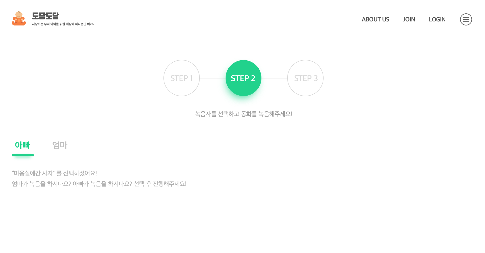

음성녹음
압축률:
샘플링 레이트 자동 선택:
샘플링 레이트:
녹음중...
다운로드 확장자
FLAC File
WAV File
Send Audio to Speech Recognition (instead of File)
Send Audio to Speech Recognition (instead of File)
Disabled: Need API key for accessing Google Speech API (see comment in app.js)
Recognition Result Data:
녹음 시작
녹음 중지